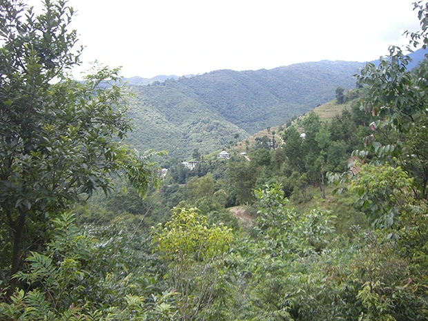
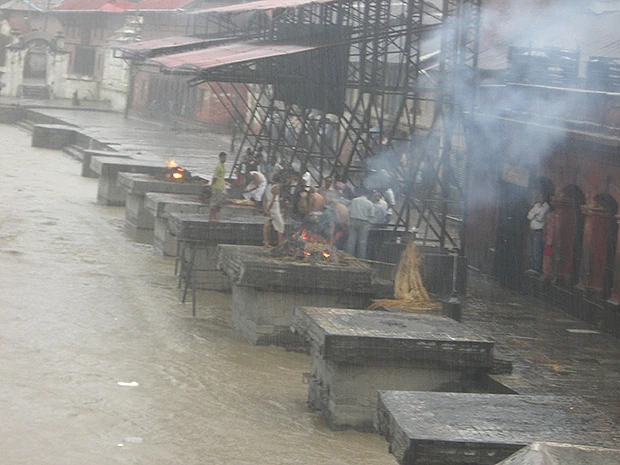

トレッキングに行ったときの山からの景色。 ヒマラヤ山脈は素晴らしい！
「この留学プログラムに決めたのは、今回一緒に参加したＭ. Ｓさんに誘われたことと、ネパールに行きたいと思ったからでした。
レッスンは英語の聞き取りと単語が難しく感じ、語学力がない私にとっては困難でした。 英語のレッスン以外にもヨガを学びました。
ネパールのホームステイは、毎日が感動と感謝の日々でした。ホストファザーが仕事で４日間不在でしたが、ホストマザーと娘さんと楽しく過ごしました。
私の年齢（５６歳）になって、ホームステイは皆びっくり驚いてます。
ネパールの生活は、日本では考えられない事ばかりですが、私の父親に言わせると「昔はそういうことなのよ」と。 しかし、女性の偉大さを感じました。
ネパール滞在は、初めてのことなので、何もわからなかったし、現地に行ってから気づく。 それで良かったです。 これも勉強ではないですか？
また、ネパールへ行きたいと思います。 語学力を身につけて！」
滅多に見られない河の側での火葬
